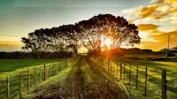
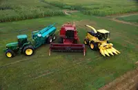

Kweneng Agriculture Chamber of Commerce
Home
Directory
Join
Discover
Explore Kweneng

Beautiful farmlands of Kweneng.
Agricultural equipment used in the region.
Fresh produce at the farmers' market.
Cattle farming in Kweneng.

Irrigation systems supporting local farms.
Modern tractors enhancing farm efficiency.